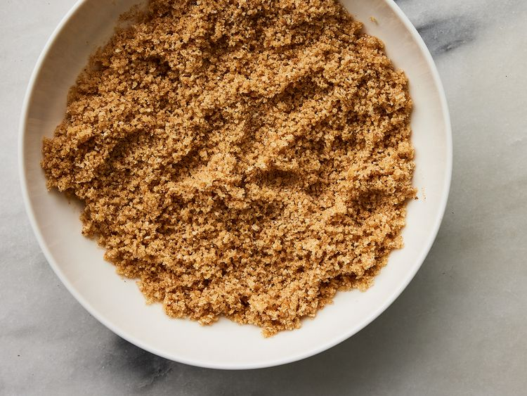
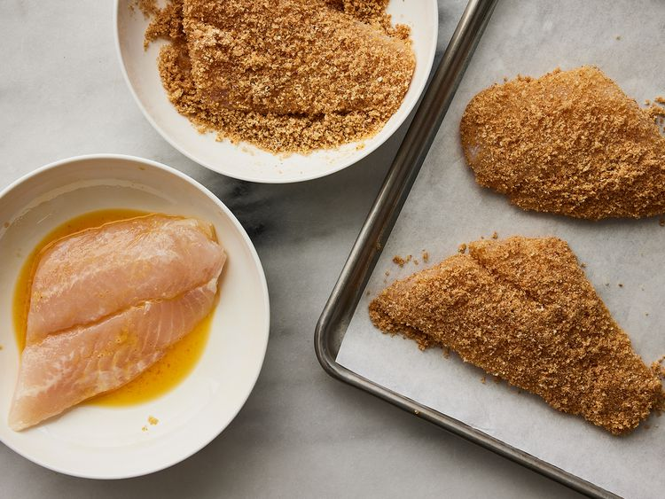
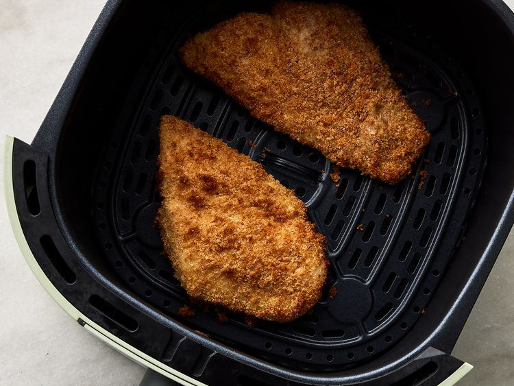

Recipe with proper details
This air fryer fish recipe is delicious. Crumbed fish is one of my favorite fried items, and this air-fried version of the recipe gives me great flavor without the fat.

| Prep Time: |
Cook Time: |
Total Time: |
Servings: |
Yield: |
| 10 mins |
15 mins |
25 mins |
4 |
4 fillets |
Ingredients
- 1 cup dry bread crumbs
- ¼ cup vegetable oil
- 4 flounder fillets
- 1 egg, beaten
- 1 lemon, sliced
Directions
- Preheat an air fryer to 350 degrees F (180 degrees C)
- Place bread crumbs and oil into a shallow bowl; stir until mixture becomes loose and crumbly.

- Dip fish fillets into egg; shake off any excess. Dip fillets into bread crumb mixture; coat evenly and fully.

- Lay coated fillets gently in the air fryer basket; cook in the preheated air fryer until fish flakes easily with a fork, about 12 minutes.

- Garnish with lemon slices; serve.
Recipe tip:
You can use any type of fish fillets in place of the flounder.
HOME PAGE